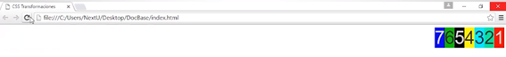

Propiedad Flex
El elemento se comporta como un elemento de bloque y establece su contenido con el modelo de flexbox.
Permite la distribución de las cajas de manera fluida y dinámica de tal manera que los contenidos se ajusten a los cambios en el tamaño de la ventana. Esta propiedad permite generar el tipo de distribución flexbox.
En nuestro código de ejemplo vamos a definir la propiedad display con el valor “flex”. La distribución flexbox ubica los elementos en el contenedor uno seguido de otro. Para determinar en que dirección se realiza esta agrupación utilizamos la propiedad “flex direction”.
En el diseño “flex”, los nodos hijo se pueden distribuir en dirección vertical u horizontal y se pueden "flexibilizar" sus tamaños, bien sea rellenando el espacio disponible o encogiéndose para evitar salirse del contorno del nodo padre.
El valor por defecto que tiene el flujo de un contenedor padre es de arriba hacia abajo (segunda imagen del ejemplo). Si el contenedor padre es body todos los elementos dentro de él tendrán esa disposición, ocupando en bloque el ancho del viewport. De igual manera si tenemos un contenedor padre, los hijos o items estarán en la misma disposición, el alto (height) es determinado hasta el último item del contenedor. Debemos tener en cuenta que si no declaramos un width y height estos se acomodarán en todo el contenedor padre y no tendremos visualización del mismo si este tiene un background.
Al aplicar la propiedad “display: flex” los ítems de un contenedor padre tomarán el flujo de izquierda a derecha (tercer flujo de la imagen), debemos tener en cuenta que los hijos de los contenedores “item” no heredarán este flujo. Es decir, si declaramos el flujo flex en body los ítems de body tendrán el display flex (de izquierda a derecha), pero, los ítems de esos contenedores tendrán el display por defecto “block”.

Debemos tener en cuenta que al aplicar esta propiedad si nuestros ítems no tienen un height ocurriría algo parecido cuando tenemos la disposición block, es decir, en este caso los ítems tendrán el ancho del contenido que componen y no rellenaría todo el ancho del contenedor padre (width), pero, si estarán ocupando todo el height del contenedor padre. Este ejemplo podemos visualizarlo en la siguiente imagen en donde vemos que los contenedores están agrupados por el ancho de su contenido.
Al aplicar la propiedad “display: flex” los ítems tienen un flujo por defecto que es el que anteriormente hemos mencionado como ejemplo, en el caso de que deseemos que vuelvan a tener la disponibilidad de “block” debemos aplicar la propiedad de “flex-direction” con el valor de “column” (columna), así, los ítems del contenedor padre volverán a tener el flujo de “bloque”.
Sintaxis


Flex Flow: Flex Direction
Anteriormente hemos hablado sobre la propiedad “display: flex” en este caso hablaremos sobre la propiedad “flex-direction”.
La propiedad “display: flex” apila los ítems o contenedores hijos uno encima de otro y para controlar esta dirección y orden en que los ubica vamos a utilizar la propiedad “flex-direction”.
Los valores de esta propiedad “flex-direction” pueden ser: column, columna-revers, row, row-reverse.

Direcciones
- Row: El eje principal del contenedor flexible esta definido para ser el mismo que la dirección del texto, ósea, de izquierda a derecha (opción 3 de la imagen).
- Row-reverse: Se comporta igual que row pero los puntos principales de inicio y final son intercambiados, ósea, de derecha a izquierda (opción 4 de la imagen).
- Column: El eje principal del contenedor flexible es el mismo que el eje del “bloque”, ósea, de arriba hacia abajo (opción 2 de la imagen).
- Column-reverse: Se comporta igual que column pero los puntos principales de inicio y final son intercambiados, ósea, de abajo hacia arriba (opción 1 de la imagen).
Flex Wrap
Esta propiedad especifica si los elementos “hijos” son obligados a permanecer en una misma línea o pueden fluir en varias líneas. Si la cobertura (wrap) está permitida, esta propiedad también permite controlar la dirección en la cual serán aplicados los elementos.
Debemos tener en cuenta que su valor inicial es “nowrap” y solo es aplicable a los contenedores “flex”.
Valores
- Nowrap: Los elementos flex son distribuidos en una sola línea, lo cual puede llevar a que se desborde el contenedor flex, es decir, los elementos se adaptan a una sola fila según el tamaño de la pantalla y a pesar de tener propiedades de medidas específicas en el contenedor no serán respetadas ya que se están adaptando a la flexibilidad del contenedor padre.
- Wrap: Los elementos flex son colocados en varias líneas. Esta propiedad es muy útil cuando es necesario que los “ítems” de un contenedor no cambien los valores al adaptarse al viewport, es decir, que en el caso de que estemos necesitando que nuestro contenedor sea más grande para que respete la medida de un item en un viewport pequeño con esta propiedad es posible.
Flex Order
La propiedad order especifica el orden utilizado para disponer los elementos en su contenedor flexible. Los elementos estarán dispuestos en orden ascendente según el valor de order. Los elementos con el mismo valor de order se dispondrán en el orden en el cual aparecen en el código fuente.
Sintaxis